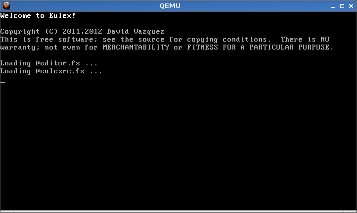
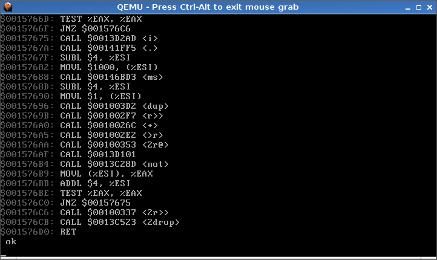
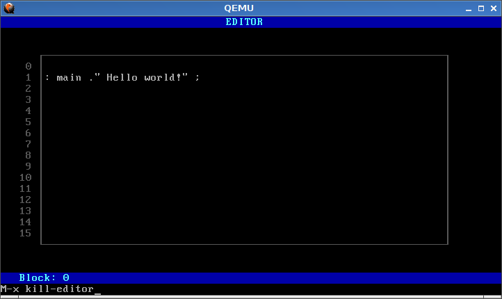
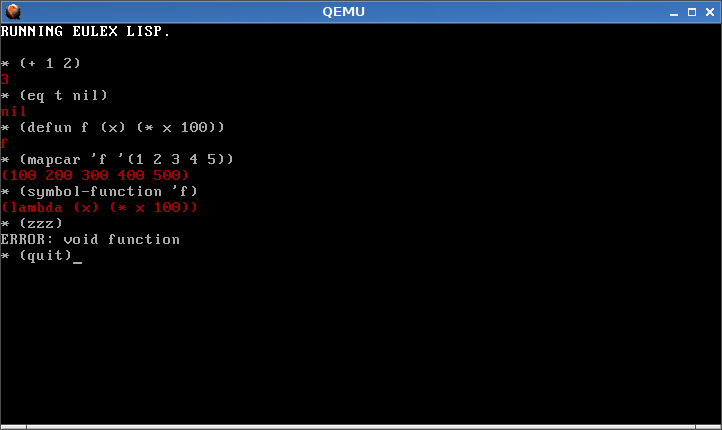

Yes, I did it, and I have to say that it was one of the most exciting hack experiences that I have had. But let us start in the beginning, four years ago. At that time, a friend and I was writing some toys related to operating systems. He was a C programmer, but knowing that nobody even will try our system, I wanted to have some extra fun! I convinced him to embed a Forth in the kernel. I did not know anything about Forth, but it promised to be interesting. I picked up an old specification of the Forth language and implement it in assembler for x86. It became a retro-software project. However, he moved to other projects and the project stopped.
A couple of years later, I found the code again. I have not any other thing to work in, so I chose to give it a try. I ported my original implementation to 32 bits and I integrated the Forth implementation with the C kernel. Once that I could write programs on it, I replaced C and grew the language with many words. I wrote output routines, a serial driver, keyboard and a video driver, memory management, exceptions, timer… It was so fun that I could not stop there and I wrote a speaker driver, an assembler and disassembler, trace/untrace utilities, a Sokoban game taken from GForth, emacs keybindings and autocompletion in the terminal like in readline, and a simple Lisp interpreter! Did I say how great growing the system from scratch was?
The first thing you have to do is make sure you have a recent Qemu installation. It has to be enough recent to support multiboot kernels. Just installing the version of your distribution should work. Now, get the source code from the repository
git clone https://github.com/davazp/eulex.git
Move to the directory where it was cloned and type make to
compile. In order to launch QEmu with the Eulex image, run the script
./run-eulex.sh. If you pass any argument to this script, they are
passed to QEmu. It can be useful to enable sound, for example.
At this point, the system should boot as below. You can type Forth
code right there and it will be evaluated. Indeed, you can type TAB
key to autocomplete words, or use some emacs-like keybindings, e.g: C-a,
C-e, M-b, M-f, C-l…

By default, the context provides standard Forth words, but if you want
to hack the internals you will need access to the internal
vocabulary. Use the word eulex to do that. You can try to type
words to list all the words in a context. In the internal
vocabulary, there are about a thousand words.
It is possible to disassemble words, e.g: see edit-line. Note that
the disassembler uses the current context to look call addresses back
into word names. If many addresses are not showing, try moving to the
eulex vocabulary.

There is not persistent storage, after halting QEmu, or rebooting with
the command reboot, changes will be lost. Therefore, you could want
to write code in the file eulexrc.fs, which is loaded automatically
when the system starts.
In closing, I would like to include a couple of nice pictures. The first one is an incomplete screen block editor,

The second one is a little Lisp interpreter, written in Forth.

I hope you liked it. If you fancy hacking this and enjoy it as I did, do not hesitate to write to me, I will help you with pleasure. There many minor details, if you would like to try it but no to spend so much time. If you feel adventurous, then the points to work are:
Rewriting forth.S as a crosscompiler to run on GForth, the 100% of the code would be Forth. The system could compile itself eventually. The assembler I wrote can be used to this task, as it executes both in Eulex as in GForth.
It is as native as described in this document. Code is very inefficient. We could optimize it, but we do not want if the compiler is written in assembler. So bootstraping should come first.
Actually, files are stored built-in with the same Eulex image, so they are read-only.
When the floppy driver or a file system implementation is working, dumping the dictionary to the disk would have the nice effect ot saving the whole state of the system.